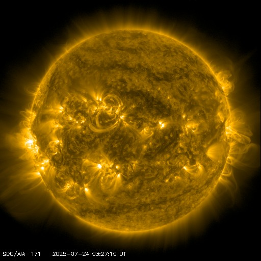
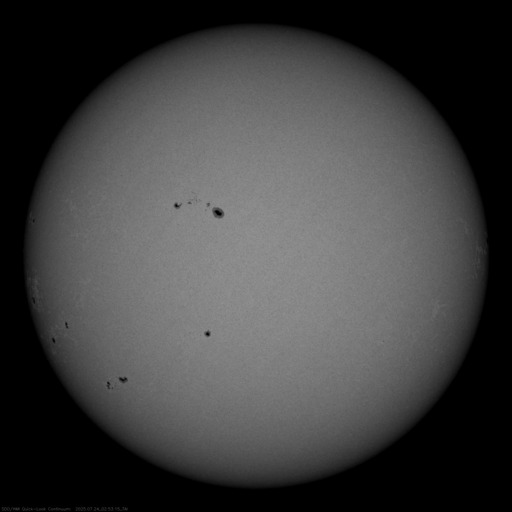
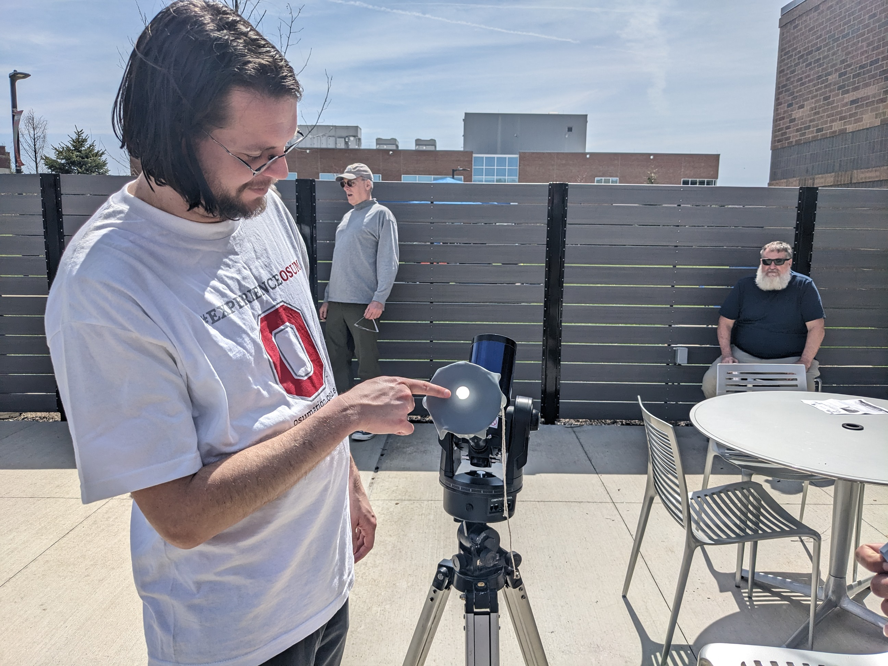
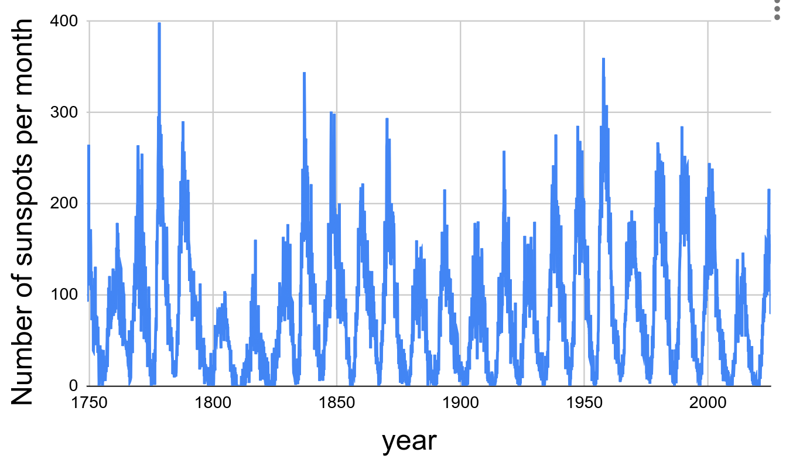

Sunspots

People have been observing the sun for centuries. Let’s look at the data and see what we can learn!
Background information
The sun might seem like a simple place where hot plasma radiates and everything stays about the same, but there is quite a bit more to it than that.
The surface of the sun is magnetically active. You can see this in the image above from the Solar Dynamics Observatory. At high or low latitudes you can notice the phenomenon of ``aurora borealis”, as many people did in 2024. You can also observe this yourself witha telescope, or a pin-hole solar viewer. Here is an image of the sun from the same day as the image above but at a wavelength that is something you could potentially observe with a solar filter on a small telescope.

The dark areas are called “sun spots”. These areas are dark because the magnetic field in those regions is so strong that the magnetic pressure is larger than the gas pressure. Ultimately this causes the region to be slightly colder than othe regions. These dark spots are still blindingly bright, but they are not quite as bright as the surrounding areas so they appear dark when viewed by a telescope with a solar filter.
The sun is magnetically active because the plasma in the sun is always moving and this tends to stretch out magnetic field lines and tie them in knots as discussed in this video
Go (safely) observe the sun!
Find a small telescope, buy a cheap solar filter, and go (safely) observe the sun. KEY OBJECTIVE: How many sunspots can you see!
Advice:
- Consider asking a local astronomy club for a volunteer to help with this. Odds are they will already have the equipment you need. Or ask a science teacher friend to help.
- The more expensive solar filters as just as safe as the cheap solar filters. The expensive solar filters show slightly more detail with the sunspots, so they are better if you were going to try to take photographs, but for just looking at the sun and counting the number of sunspots the expensive solar filters aren’t that much better than the inexpensive ones.
- Use the largest (widest diameter, heaviest) eyepiece that you have because these eyepieces zoom out the most, thus making it much easier to put the sun in view. The smaller eyepieces are for zooming in, but because of this it is difficult to use these eyepieces unless you are already precisely aimed at the sun. So maybe just stick with the zoomed out eyepieces for this activity.
- Do NOT use the spotting scope attached to the telescope to help align the telescope with the sun. Instead, look closely at the shadow that your telescope makes, and use that to align the telescope with the sun.
- Put the solar filter on the telescope at the beginning and leave it there until the observing is over. You can align the telescope with the sun even with the solar filter on.
- If you are worried about aligning the telescope with the sun, you can practice in the evenings by aligning the telescope with the moon (with the solar filter off, obviously). If the moon is bright enough you can use the shadow trick to align the telescope with the moon without the spotting scope.
- It is possible that the sun will not be very magnetically active on the day that you observe it and perhaps only one or zero sunspots will be visible
Alternative ways to observe sunspots
- If you are less crafty, or it turns out to be cloudy on the day you planned to do all this, then check out the website for NASA’s Solar Dynamics Observatory, look at “The Sun Now” and click through all the different images of the sun
- Another way to observe the sun is something that people do to observe eclipses called a “box pinhole projector”. Get a cardboard box (larger is better), cut out part of it and place aluminum foil on that part and then use a needle or a paperclip to put a small hole in the aluminum foil. This will produce an image of the sun on the opposite side of the box. It helps to put regular office paper on the side where the image of the sun appears. If the sunspot is large enough, you may be able to see it with this method
- Still another way to observe the sun is using a small telescope and something that some call a “light bucket” or “sun funnel”

A random OSU Marion professor is projecting the sun onto a thin piece of rubber that is attached to a funnel purchased from an auto parts store.
An advantage of the light bucket / sun funnel is that students don’t need to look into an eyepiece, consequently you don’t need to worry about the focus being correct for each student (since they will all have different eyesight). A disadvantage is that you can see sunspots but not as clearly as you can with an optical solar filter and an eyepiece. Note that when you use the sun funnel, you do not use a solar filter (which is true of the image above).
Download historical sunspot data and make a chart
After giving students a context for what sunspots are, and how many sunspots are on the sun right now, we can now focus on how the number of sunspots vary over time. It turns out that the Royal Observatory of Belgium has been observing the sun since the 1700s.
- Here is a link to the Royal Observatory of Belgium Historical Solar Data Page, note that it automatically keeps the files up to date so you can always get measurements from as recently as a few weeks ago
Because the Royal Observatory of Belgium website keeps the data up to date, we are not going to provide a downloadable data file here that will quickly go out of date.
Advice:
- Focus on the “Monthly mean total sunspot number” data. Although daily data is available, there are often days when no measurement was taken, or no sunspots were observed which appear as -1 in the file. The monthly data does not have this issue because there is always at least one sun spot observed.
Steps
Click to download the CSV of the “Monthly mean total sunspot number” or just click this link https://www.sidc.be/SILSO/INFO/snmtotcsv.php
Load the CSV file into a spreadsheet program. For the delimiter, specify a custom delimiter of ;
Identify the column for time and the column for the number of sunspots observed, and add a chart
The chart should look something like this:

Explore and analyze the data!
Here are some questions to consider
- What are the patterns in the data?
- What evidence is there for a solar “cycle”? How long is this cycle? Is the length of this cycle always the same or does it change?
- According to the data, what is the average number of sunspots per month?
- Is there a particularly large or small number of sunspots on the sun right now compared to the average?
- The aurora in 2024 was an epic sight that many people in the midwest and northern US states enjoyed. According to the number of sunspots observed, how unusual was the magnetic activity during 2024 compared to the magnetic activity that your parents or grandparents may have been able to see when they were growing up?
- What do you think the sunspot data will look like over the next few years? Will it be increasing or decreasing?
- It turns out that when the sun is more active (i.e. when more sunspots are observed) that the earth is slightly hotter, and when the sun is less active (i.e. fewer sunspots are observed) the earth is slightly cooler. For example when there was low sunspot activity in the early 1800s, according to historical records, the earth was slightly cooler than normal. over the past two decades, the earth has been few degrees farenheit warmer than it has typically been compred to data from more than two decades ago. Is it possible that increased solar activity is the cause of the increased temperature of the earth? Has the solar activity over the past two decades been significantly higher, lower or roughly the same as earlier periods of time?
Optional extension: Upload the data to an AI model
AI models like ChatGPT have the ability to read in data and create plots using python. Upload your data set to your favorite AI model and have a dialogue with it about what patterns you think might be in the data and ways that these patterns can be analyzed.
Note: There may be limits on the number of “premium” queries. Note that students get free access to Github pro, and teachers can get a verified Github Education account which provides lots of free AI queries to Github copilot – much more than what you can currently get from most AI models.